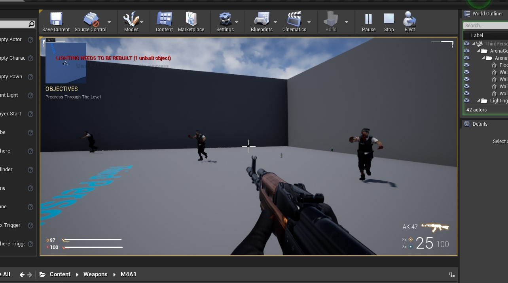
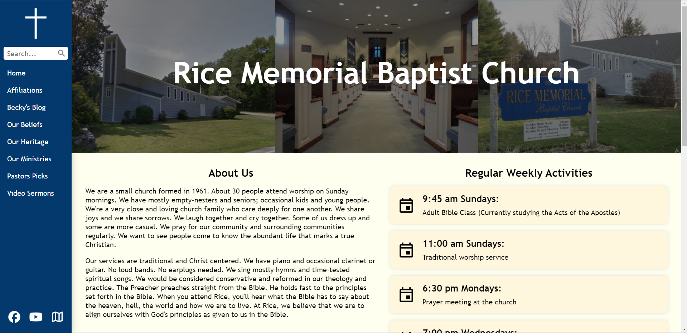
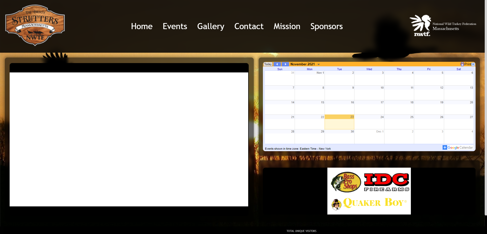
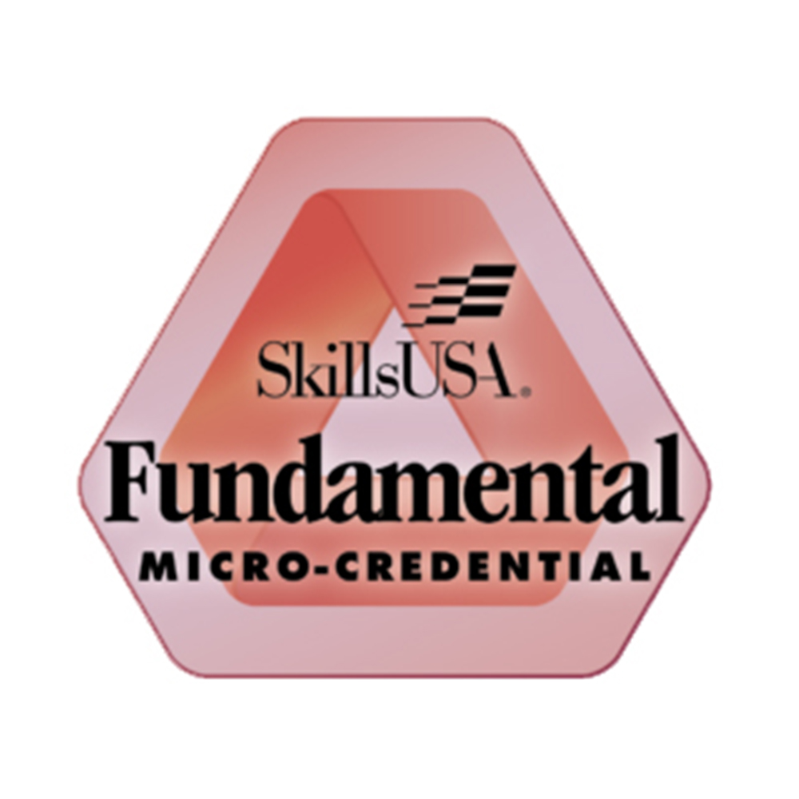

I am currently a student at Assabet Valley Regional
Technical Highschool. I am enrolled in the Computer
Programming and Web Development shop. I am very passionate
about technology and want to learn as much as I can about
it. I have always been interested in this from a young age.
During my time in shop I have been able and learn how to
program using html, css, javascript, php, python, and C++. I
have also learned a lot more about computer hardware as
well.
Projects
Alice Game
For this project I used the program alice to create a
game. Alice uses block code to emulate Java. The
character in the game is a turtle who has to eliminate
all the aliens in order to win. The alien has a bow and
arrow to kill the aliens with. the aliens kill the
player with a melee attack. At the end of the game there
is a large boss alien to kill, when the boss is killed
you win the game. To make this game I leared how to add
a movement system and colison. I created AI to make the
aliens seek towards the player to attack. I designed the
map also.
Unreal Engine Game

For this project I learned about game development using
unreal engine and I created a basic FPS game. I learned
how to implement physics such as gravity and colison. I
was able to create movement system with jumping and
crouching. I created a health system that allows the
player to take damage from the zombies when they attack.
The zombies have a basic AI that makes them run towards
the player when they see him. A gun is used to kill the
zombies, it has an ammo counter and can reanimate. The
player and zombies are complete with animations. I made
the UI show all the useful infromaton needed such as
ammo count, grenade count, health, objective, and the
minimap. I also designed a map.
Python Calculator
I created a basic calculator using python. It includes
the basic functions like adding, subtracting,
multiplication and division.
Rice Memorial Baptist Church Website

Website for the Rice Memorial Baptist Church in
Northborough Massachusetts.
NTFW Website

Website for the Tri County Strutters
Certifications
Osha
The OSHA Outreach Training Program for General Industry
provides training for entry-level workers and employers
on the recognition, avoidance, abatement, and prevention
of safety and health hazards in workplaces in general
industry. The program also provides information
regarding workers" rights, employer responsibilities,
and how to file a complaint.
Google IT
The Google IT Support Certificate introduces learners to
troubleshooting, customer service, networking, operating
systems, system administration and security. This
certificate is for beginners - no prior experience is
required. The Google IT Support Certificate is designed
to prepare learners for entry-level roles in IT support.
Those who complete are competent in foundational skills,
including troubleshooting, customer service, networking,
operating systems, system administration, and security.

Fundamental Micro-Credential
The SkillsUSA Career Essentials curriculum and
credential program provide career and technical
education students with the foundational skills,
attitudes and values necessary to ensure America has the
skilled workforce it needs to stay competitive on a
global scale.